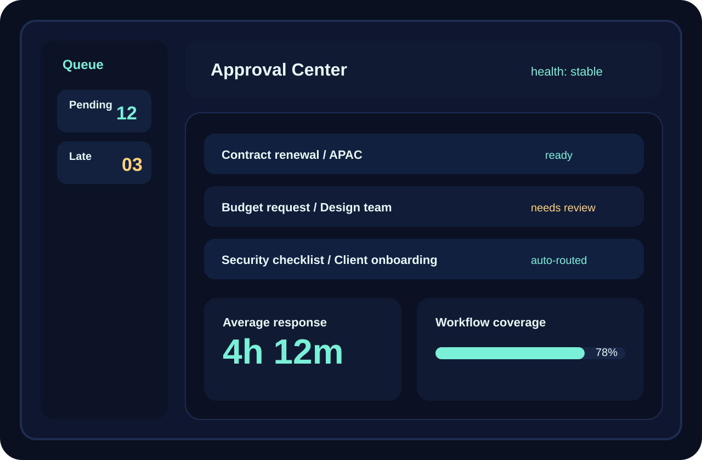
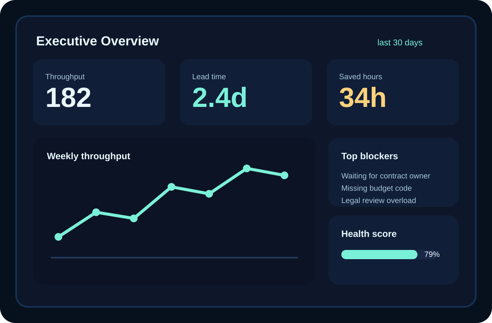
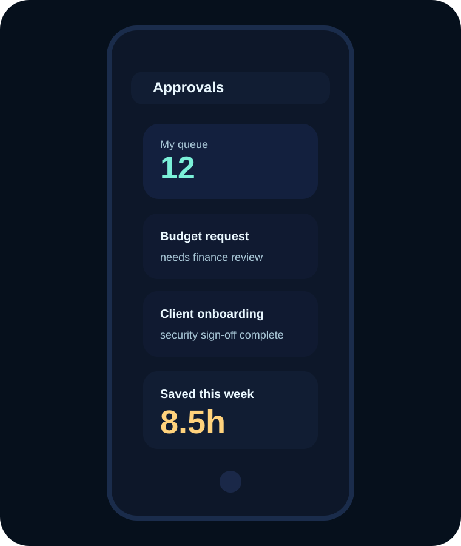
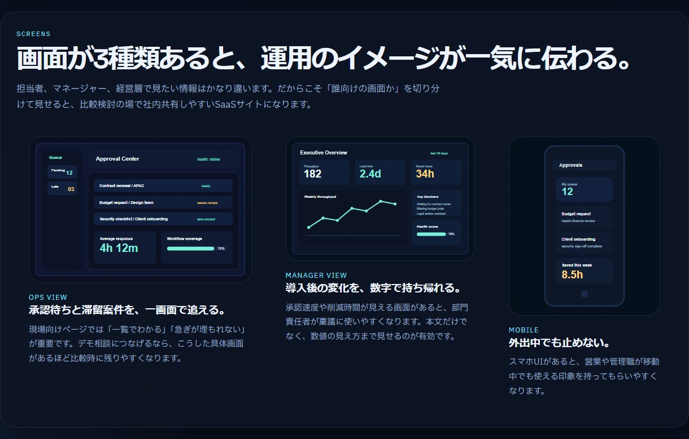

Before
- 進捗確認がSlack、表計算、口頭に散らばる
- 承認待ちの所在がわからない
- 案件ごとの担当引き継ぎで認識差が出る
SaaS、BtoBサービス、資料請求やデモ相談へつなぐページの相談なら、このサンプルを土台にできます。
このテイストで相談するFlowSync は、30〜200名規模のチームで使う業務管理SaaSを想定したサンプルです。営業資料のような抽象表現よりも、画面、数値、運用イメージを先に見せて、比較検討の材料が残るページを目指しています。
$ flowsync inspect handoff-pipeline pending_approvals 12 avg_response_time 04:12 workflow_health stable alert_threshold normal
SaaSの訴求では、課題と導入後を比較して見せると、使う理由が伝わりやすくなります。このページでは、複雑な説明を減らして「導入前」と「導入後」の差に視線を集めています。
管理者、現場担当、経営層では知りたい機能が違います。そこで、このサンプルではタブ型にして、役割ごとに響く訴求へ切り替える見せ方を入れています。
タスク、必要資料、承認状況が同時に見えることで、今やるべきことがすぐ判断できます。
案件の停滞箇所がひと目で見えることで、確認のための会議や個別連絡を減らせます。
現場の細かな画面よりも、リードタイム、利益率、案件消化量などの上位指標が判断材料になります。
担当者、マネージャー、経営層で見たい情報はかなり違います。だからこそ「誰向けの画面か」を切り分けて見せると、比較検討の場で社内共有しやすいSaaSサイトになります。

Ops View現場向けページでは「一覧でわかる」「急ぎが埋もれない」が重要です。デモ相談につなげるなら、こうした具体画面があるほど比較時に残りやすくなります。

Manager View承認速度や削減時間が見える画面があると、部門責任者が稟議に使いやすくなります。本文だけでなく、数値の見え方まで見せるのが有効です。

MobileスマホUIがあると、営業や管理職が移動中でも使える印象を持ってもらいやすくなります。
案件ごとに申請フローが散らばっていた状態から、承認の所在を一元化して、待ち時間の見える化に成功した想定です。
複数部署をまたぐ引き継ぎをテンプレ化し、案件開始から納品までのムラを減らした事例を想定しています。
SaaSサイトはコピーだけだと差が伝わりにくいので、画面、導入前後の変化、問い合わせの温度感を具体的に見せるのが大事です。特にデモ相談へつなげたい場合は、実際の運用画面や数値があるほど強くなります。



課題訴求、機能紹介、導入事例、料金、資料請求・デモ相談までを含むSaaSサイト。営業用の資料と整合しつつ、サイトだけでサービス理解が進む状態を目指す想定です。
小規模チームでの導入向け。まずは散らばった情報をまとめたい場合の入口。
¥29,800複数部署運用向けの主力プラン。承認、通知、自動化まで含めて見せたい構成です。
¥79,800